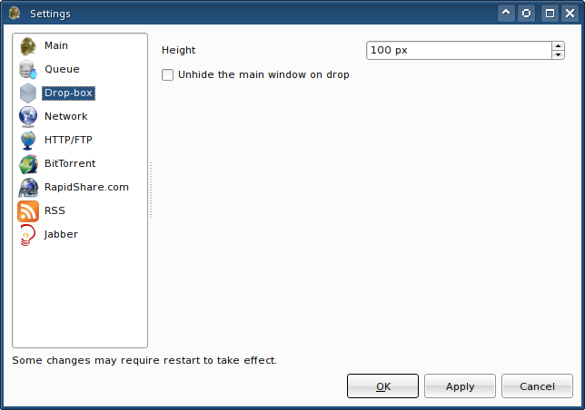

The drop-box is a tiny widget, which stays on top of other windows under all circumstances. That way you can always use it as a drop target. For instance you can drag a link from a web browser and drop it onto the drop-box. Then the "Add new transfers" window will appear.
There are several ways of displaying the drop-box. The first way is through the menu: FatRat - Display the drop-box. The same menu is accessible through the tray icon. Nonetheless, it is faster to middle-click the tray icon, and the drop-box will show up as well. The drop-box can be hidden using the same methods or by middle-clicking it.
If the drop-box seems to be too small or too big, you can change its size in the settings dialog.
